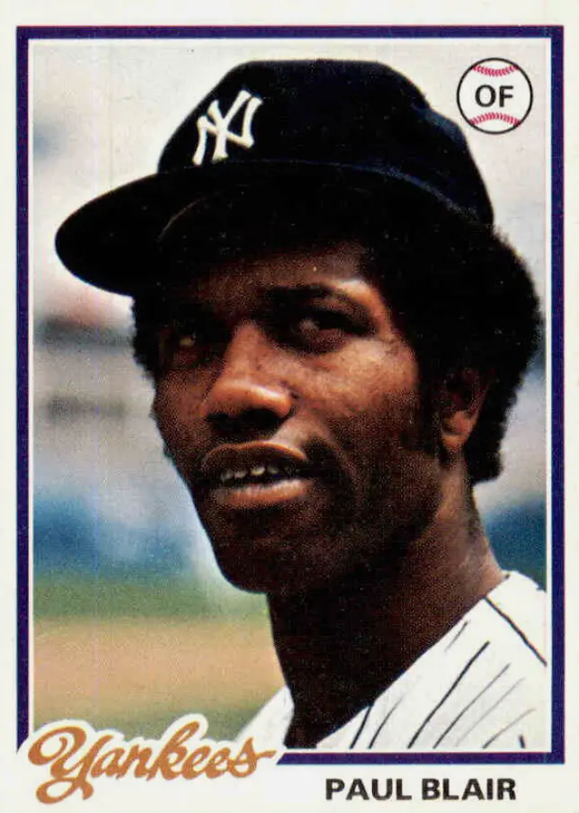

Paul Blair "Motormouth"
Career Highlights & Facts
(Facts are AI-generated and may require verification)
- Earned 8 Gold Glove awards for defensive excellence in center field.
- Holds the record for the most hits in a single League Championship Series game with 5.
- Successfully utilized hypnosis therapy to overcome a fear of inside pitches.
Would you like to find out more about Paul Blair?
Player Biography
Paul Blair
January 4, 2012
/
in
BioProject - Person
1960s All-Stars
,
1970s All-Stars
1970 Baltimore Orioles
/
by
admin
This article was written by
Mike Huber
Paul Blair is considered one of the premier defensive center fielders of his era. He made his major league debut on September 9, 1964, and played in 1947 games over a seventeen-year major league career, with his final game coming on June 20, 1980. He batted and threw right-handed but tried switch-hitting for a brief time.
Paul L. D. Blair was born February 1, 1944, in Cushing, Oklahoma, but his family moved to Los Angeles when Paul was young. He grew up a Dodgers fan, once remarking, “I was always a Dodger fan, back when they were in Brooklyn. I was a Dodger fan, mainly because of Jackie Robinson, but [Duke] Snider and [Carl] Furillo, too.”
1
Paul graduated from Manual Arts High School in Los Angeles in 1961, where he lettered in baseball, track, and basketball. His baseball team finished dead last in 1960 but jumped to first in 1961. At the age of 17, Blair got a tryout from the Dodgers, but he was rejected. The Dodgers’ scouts thought the six-foot, one-inch ballplayer was too small to make it to the majors. The Mets’ scouts disagreed.
Paul was signed by the New York Mets on July 20, 1961, as an amateur free agent, at the position of shortstop. Floyd “Babe” Herman signed him to his first contract for $2000. “The first day the coach told us to run out to our positions,” Paul once told a reporter. “Well, seven players went to shortstop and six went to second but only one went to right. And I knew I could throw better than him and run better than him. So I ran out to right and played there. Then the center fielder got hurt and I moved to center.”
2
The Mets had assigned the new outfielder to Santa Barbara of the California League in 1962, where he batted .228 with 147 strikeouts. He was then sent in October to the Florida Instructional League and hit extremely well. He also met and became good friends with fellow outfielder Cleon Jones. The Mets had left Blair unprotected after a season with Santa Barbara, and the Orioles drafted him in the 1962 first-year draft. When Jones and Blair would meet after that, Cleon the Met would say, “You got your break when you got drafted,” and Paul the Oriole would reply, “You got your break when I was drafted.”
3
The Orioles sent Blair to Elmira, New York, in 1964. Paul appeared as a pinch-runner in his major league debut on September 9, a 4-3 loss to the Washington Senators, but he did not bat or play in the field. In 1964, he appeared in a total of eight games, but he only batted in the final game
.
It was in Elmira that Paul Blair met Evelyn Cohen. He was playing in the Eastern League and they became engaged. Paul and Evelyn waited until the 1965 American League season started to exchange their wedding vows. The happy couple was wed on the baseball diamond in Elmira on April 15. They would have two children: Terry was born on September 23, 1965, and Paula was born on May 29, 1968.
Before the 1965 season, Blair completed a six-month tour of duty with the Army Reserve at Fort Jackson, South Carolina, as a communications specialist. He opened the 1965 season in center field for the Orioles, despite not being mentioned as a starting player during spring training. Manager Hank Bauer said that Blair would hold that position “until he plays himself out of it.”
4
His intuition and speed allowed him to play shallow and run balls down. Earl Weaver, Blair’s second manager in Baltimore, believed that saving a run is just as good as scoring a run. And Paul Blair saved many runs by patrolling the center of the Orioles’ outfield. His amazing quickness allowed him to track down balls that should have dropped in for hits. Paul would often say, “In the outfield I felt there was no ball I couldn’t get to. I played the shallowest center field of anyone.”
5
In an interview in 1997 in
USA Today Baseball Weekly
, Blair explained his defensive approach to the game. “I was taught to play defense. Back in our day it was pitching and defense. Our philosophy (the Oriole way) was don’t make the little mistakes that cost you ballgames. That is the way we won over such a long period of time.”
6
In Game Three of the 1966 World Series, Blair hit a solo home run against Claude Osteen and the Dodgers, giving Wally Bunker all the run support he needed for a 1-0 victory. In Game Four, his acrobatic leaping catch off the bat of Jim Lefebvre saved a home run and preserved a 1-0 win for Dave McNally, as part of the Orioles’ stunning four-game sweep of Los Angeles. After the 1966 season, to continue to improve his hitting skills, he played winter ball with the Santurce club in the Puerto Rican League.
On May 17, 1967, the Baltimore Orioles became only the eighth team in the history of the American League to hit four home runs in the same inning (Andy Etchebarren, Sam Bowens, Boog Powell, and Dave Johnson connected in a 9-run seventh inning). Paul Blair, Frank Robinson, and Brooks Robinson also homered in that game, marking the only time in history that seven different teammates each hit a round-tripper in the same game. Blair’s 12 triples in 1967 led the American League and remain the Orioles season record. He was also a great bunter and fundamentals player. He recorded at least ten sacrifice hits four times in his career, including having 13 in 1969 (which led the league) and 17 during the 1975 season.
In 1967, Blair hit .293 with an on-base percentage of .353, and a slugging percentage of .446. That batting average was fifth best in the league. He also clubbed 11 homers, with 64 RBIs and 27 doubles to go with 12 triples. As fast as he was, however, Blair concedes that he was never much of a base-stealer, with a career high of 27 in 1974 and 20 or more only three times. At the end of the 1967 season, the speedy center fielder was rewarded for his seasonal stats, as Blair picked up several prizes, including a portable stereo from the radio station WFBR as the Most Valuable Oriole, an engraved silver tray from the Maryland General Assembly, a color TV set from the National Brewing Company after twice hitting home runs in Home Run Derby innings, and a black-and-white TV set.
In the winter of 1967, Blair again played in the Puerto Rican league, as the Orioles wanted him to continue to improve his hitting. However, in December of that year, Paul broke his right ankle, causing him to miss most of the 1968 spring training.
According to a June 2, 1968, article in The Sun Magazine, Blair’s nickname “Motormouth” was the inspiration of Harry Dunlop, who was Blair’s 1963 manager at Stockton, the Orioles’ farm team in the California League. “We were coming out of the dugout,” Blair said, “and Curt Motton and I were arguing. We were hitting about .320 apiece, but I had outhit him the day before — 4-for-4, I think it was — and I was reminding Curt about it. Dunlop heard us and said, ‘Motton, Blair’s getting to be as bad as a motor, isn’t he?”
7
Frank Robinson and Curt Blefary revived the nickname in the big leagues and it stuck. Everyone on the Orioles knew that Blair was a big league hitter and a big league talker.
Blair’s best season, by OPS+, was 1967, but his most productive year was probably 1969, when he hit .285, had an on-base percentage of .327 and slugging percentage of .477. Showing more power, he smacked 32 doubles and 26 homers, stole 20 bases, scored 102 runs and had 178 hits in 150 games. He also had 76 runs batted in. Defensively, the loquacious Oriole won one of his eight Gold Gloves for the excellence he showed while roaming center field.
Paul ended the 1969 season as the only center fielder to have more than 400 putouts. The next best outfielder was Del Unser with 339. Fans would wrack their brains to remember the last time they saw a ball land between Blair and the center field fence. During the 1969 campaign, the Oriole hit an inside-the-park home run at Memorial Stadium. The date was August 8, 1969, and it was the first inside-the-park homer at that stadium since Billy O’Dell had hit one in 1959. That year, 1969, would mark the first time the fans voted the Orioles’ center fielder to the All Star Game. He would also be honored as a Sporting News All-Star at the conclusion of the season.
In 1970, Blair had two significant events in baseball. The first could well be the best single offensive display of his career. He hit three home runs and knocked in six runs in a game on April 29, 1970, as the Orioles beat the Chicago White Sox, 18–2. The second event was career-altering. Unfortunately, in addition to his remarkable defensive prowess, Paul Blair is remembered for receiving a severe beaning by California Angels pitcher Ken Tatum on May 31, 1970. He was carried off the field with a broken nose and serious eye and facial injuries; Blair claims he never saw the pitch. He missed the next three weeks of the season but came back to play a total of 133 games that season and insists it did not affect him. Nevertheless, Blair never equaled the offensive output from his successful 1969 season. In 1971, he attempted switch-hitting, but went 11-for-57 and gave up the experiment.
The Orioles played the Cincinnati Reds in the 1970 World Series. Paul Blair set a record by garnering nine base hits in the five-game series. The center fielder clubbed .474 in that Series, out-hitting all players on both sides, but everyone remembers instead what his Hall of Fame teammate at third base, Brooks Robinson, did defensively against Lee May, Johnny Bench, and the Big Red Machine.
In general, Blair was known around the league as a fastball hitter who liked the ball inside. He often crowded the plate, even after his accident in 1970. He himself admitted he was too stubborn to hit the outside pitch to right field, preferring instead to pull the ball. Part of his success at the plate came from batting ahead of Hall of Famer Frank Robinson. Blair once said, “With him behind me, I knew at two and oh or three and one counts what they’d throw me. They’re not going to walk Paul Blair to get to Frank Robinson, so they’re going to throw me a fastball. After Frank [left the Orioles], they were throwing breaking balls. And the slider was a pitch I had trouble with. I wasn’t disciplined enough to take those pitches and walk.”
8
In 1972, Blair’s batting average dipped to a terrible .233, and his on-base percentage was only .267. Something had to be done. On June 15, 1973, Blair started seeing a Baltimore psychiatrist. After a suggestion from Chan Keith, a baseball writer for the Baltimore News American, Paul visited Dr. Jacob H. Conn and received hypnosis therapy, restoring confidence in his ability to avoid inside pitches. According to the doctor, in one session, he was able to unlearn three years of ducking out of the way every time a ball came inside. Over the next two weeks, he was hitting .522. In a dozen games, he collected 24 hits in 46 at-bats, including six doubles, a triple, and three home runs. He drove in eleven runs and scored ten. On May 29, he had been batting just .218, but a month later, he was fourth in the league at .321. He ended the season at .280.
Paul Blair accomplished a rare feat in 1973 when he hit an inside-the-park grand slam homer against the Kansas City Royals. The game was August 26 and featured Jim Palmer matched up against Paul Splittorff. Blair drove a ball into the gap. Royals outfielders Amos Otis and Steve Hovley collided in mid-air, and Blair rounded the bases. The official attendance was only 15,285. On September 3, 1973, Blair hit a three-run inside-the-park home run against John Curtis. At the end of the 1973 season, Blair was considered a unanimous Gold Glove selection. The dependable center fielder had received 44 of 49 possible votes. However, the 5 votes he did not receive were from the Orioles’ staff, who were not eligible to vote for him.
In 1974, Paul Blair again led all American League outfielders with 447 putouts in center field (in 1969 he had 407). In fact, nine times in his career, he had more than 300 putouts in the outfield. His defense kept him in the line-up, despite his batting .218 in 1975 and only .197 in 1976.
On January 20, 1977, the Orioles traded the contract of 32-year-old center fielder Paul Blair to the New York Yankees for Elliott Maddox, 27, and Rick Bladt, 30. At the time, Blair was the Orioles’ all-time leading base stealer with 167. He also ranked third in the Orioles record books (behind Brooks Robinson and Boog Powell) in games, at-bats, runs, hits, total bases, and runs batted in. His career average with Baltimore was .254. He had played in all five American League Championship Series and all four World Series in which the Birds were involved. His eight Gold Gloves contributed mightily to the Orioles’ success.
Blair left Charm City to become a reserve for the Yankees for two seasons (both World Series championship seasons for the Bronx Bombers), and then was released just into the 1979 season. After a month off, in May 1979, the Cincinnati Reds signed Blair to a one-year contract. His acquisition gave the Reds 31 Gold Gloves on the team: Bench (10), Blair (8), Morgan (5), Concepcion (4), and Geronimo (4). Unfortunately, Blair, new to the National League, did nothing for the Reds, batting .152 in 77 games and just 145 at-bats, then went back to New York for 1980. He played in 12 games as a defensive replacement (just two at-bats), and retired at the age of 36.
After his playing days were over, Paul Blair became an outfield instructor for the New York Yankees in 1981. He was named the head baseball coach at Fordham University in August 1982 and coached the 1983 season, compiling a record of 14?19. That position lasted only one year, but Blair kept in touch with major league teams, offering his services again as an instructor. He last did it at the major league level for the Houston Astros in 1985. In 1989, at the age of 45, he played 17 games for the Gold Coast Suns of the Senior Professional Baseball Association. The club split its home games between Miami and Pompano Beach, Florida, and hired future Hall of Famer Earl Weaver as its manager. Despite fine performances from Bert Campaneris (.291 with 16 stolen bases) and Joaquin Andujar (5-0 with a 1.31 ERA), the team did not make the playoffs. After its first season, the Gold Coast Suns ceased operations.
In 1995, the former major leaguer accepted a coaching job for the Yonkers Hoot Owls, one of six teams in the new independent professional Northeast League (the Hoot Owls became the Bangor Blue Ox in 1996). Between the time he stopped playing and began coaching, Paul devoted his time to high school coaching, operating a baseball camp, and working as a sports coordinator for a clothing firm. He was also the head baseball coach at Coppin State College from 1998 to 2002. Granted, he inherited a desperately inexperienced team, but under his leadership, the team posted a disappointing 30-185 record. Although Paul Blair the player had been associated with very successful major league teams, Paul Blair the coach could not attain the same success. He retired to Owings Mills, Maryland.
Paul Blair had two great postseason series for the Orioles in his career. In the 1969 American League Championship Series against Minnesota, he hit .400 and slugged .733 with a homer and six RBIs, and in the 1970 World Series against the Reds, he hit .474 and slugged .526, also scoring five runs. Blair’s five hits in the final game of the 1969 American League Championship Series against Minnesota is still a record. Indeed, the former Orioles center fielder is the only player ever to get five hits in a single ALCS game. Twice he was named to the American League All-Star squad (1969, 1973). He played in a total of 52 post-season games during his 17-year baseball career, and his team won nine of 13 post-season series. He played in six World Series and won four World Series rings, two with the Orioles (1966 and 1970) and two with the Yankees (1977 and 1978). The player once known as Motormouth received votes for the American League’s Most Valuable Player in four different seasons. At the time Paul Blair retired, his eight Gold Gloves were a record for an outfielder, since broken by Ken Griffey Jr. Blair’s career fielding percentage was .987, as he only had 57 errors in 4462 chances. He batted .250 for his career during a time when the league batting average was just .254.
Postscript
On December 26, 2013, Paul Blair, 69, collapsed while bowling in Pikesville, Maryland. He was taken to Sinai Hospital in Baltimore, where he died.
Sources
Baltimore Orioles Media Guide
, 1970.
Personal conversations with SABR members Gabriel Schechter, Malcolm Allen, and Jan Finkel.
Notes
1
Robert Lipsyte, “Sports of the Times,”
New York Times
, October 11, 1964.
2
USA Today baseball Weekly
, July 10-15, 1997.
3
Lipsyte, “Sports of the Times.”
4
The Sporting News
, May 8, 1965
5
USA Today baseball Weekly
, July 10-15, 1997.
6
USA Today baseball Weekly
, July 10-15, 1997.
7
The Sun Magazine,
a publication of
The Baltimore Sun
, June 2, 1968.
8
Answers.com
,
www.answers.com/topic/paul-blair-baseball
, accessed May 14, 2007.
Full Name
Paul L. D. Blair
Born
February 1, 1944 at Cushing, OK (USA)
Died
December 26, 2013 at Baltimore, MD (USA)
Stats
Baseball Reference
Retrosheet
Tags
1960s All-Stars
·
1970s All-Stars
·
1970 Baltimore Orioles
Career Totals
| WAR | AB | H | HR | BA | R | RBI | SB | OBP | SLG | OPS | OPS+ |
|---|---|---|---|---|---|---|---|---|---|---|---|
| 37.7 | 6042 | 1513 | 134 | .250 | 776 | 620 | 171 | .302 | .382 | .684 | 96 |
Statistics via Baseball-Reference.com
The Original Clue